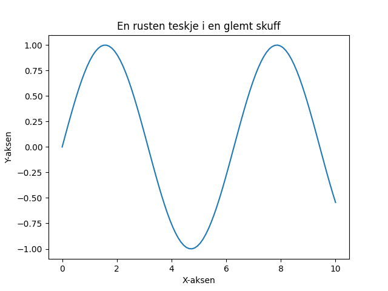

En rusten teskje i en glemt skuff, drømmer om te og en gyllen puff. Den lengter mot koppen, mot dampen og glød, mens støvet legger et grått, stille lag av nød.

import matplotlib.pyplot as plt
import numpy as np
# Generer noen data for figuren
x = np.linspace(0, 10, 100)
y = np.sin(x)
# Lag figuren og akse
fig, ax = plt.subplots()
# Plott dataene
ax.plot(x, y)
# Sett tittler og akseetiketter
ax.set_title("En rusten teskje i en glemt skuff")
ax.set_xlabel("X-aksen")
ax.set_ylabel("Y-aksen")
# Lagre figuren
plt.savefig(output_path)execution_ok=True fallback_used=False image_ok=True